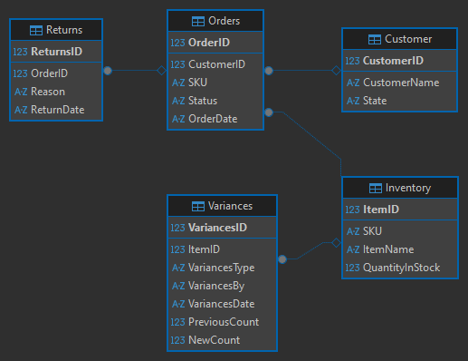
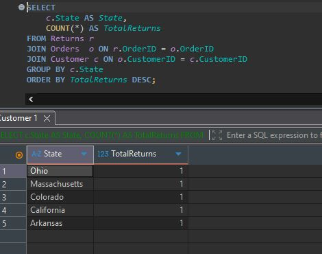
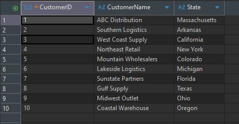

Databases
The artifact I chose for the database category is loosely based on my DAD-220 project. I say loosely based because I started off trying to change and edit what I had in that project but it became hard to do without having the database that went with the project. Due to this I created a new database design and actually based it off my enhancement 1 project. I used the idea of an app that would store information for a warehouse that does online sales. With this I used the DAD-220 project as a baseline for what I should be creating. I created the table relations as showing in the image below. Since I am slightly changing how this project is shown. I chose to recreate it all in DBeaver.
I also created four scripts to query this database. Since this is just a shell of a database all the queries show empty results. For the final I will probably make some sample data to be shown for each query. Currently the scripts I have created are, Returns by Reason Code, Returns by State, Returns Percentage by SKU, and Variance Report. As a piece of side information a SKU is a unique identifying number each product has. When I use to work at a Staples fulfillment center we carried thousands of SKU’s. I mainly chose this project because every company deals with data in one way or another. Being able to show that I can properly manage data and query it is very important.
This project meets the following three outcomes.
• Design and evaluate computing solutions that solve a given problem using algorithmic principles and
computer science practices and standards appropriate to its solution, while managing the trade-offs
involved in design choices.
• Demonstrate an ability to use well-founded and innovative techniques, skills, and tools in computing
practices for the purpose of implementing computer solutions that deliver value and accomplish
industry-specific goals.
• Design, develop, and deliver professional-quality oral, written, and visual communications that are
coherent, technically sound, and appropriately adapted to specific audiences and contexts.
I feel this project still reflects what I said in module one. I may have changed it a bit since then but the change feels good and just adds more to the project. I really wanted to create something more than just a word document with SQL queries. Recreating this in DBeaver really came around because of my job today. Some groups of developers use DBeaver at my job today. So when looking for a place to recreate SQL queries and a database. DBeaver showed up in the Google search. Since this was a familiar name I chose to learn some more about it in order to complete this milestone.
Downloads
Screenshots


